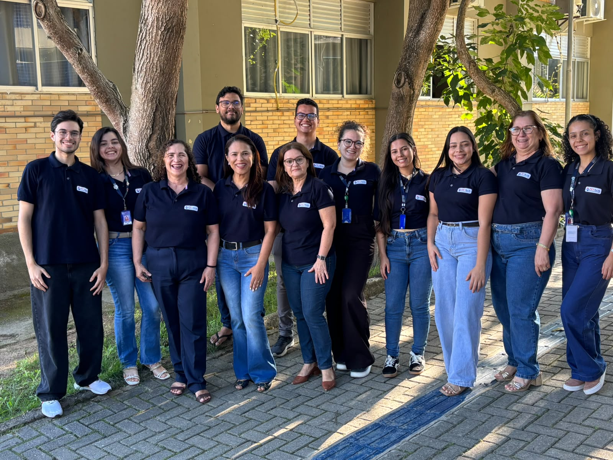

Quem Somos
O suAIDPI é uma tecnologia digital desenvolvida no âmbito do
PET-Saúde: Informação e Saúde Digital,
com o propósito de apoiar profissionais da Atenção Primária à Saúde
na aplicação da estratégia AIDPI durante o atendimento infantil.
Unindo saúde, tecnologia e design, o projeto busca tornar o acesso às
etapas da estratégia mais claro, organizado e eficiente, contribuindo
para a qualificação do cuidado à criança.
Sobre o PET-Saúde Digital
O Programa de Educação pelo Trabalho para a Saúde:
Informação e Saúde Digital (PET-Saúde/I&SD) é uma iniciativa
do Ministério da Saúde em parceria com o Ministério da Educação,
que promove a integração entre ensino, serviços de saúde e
comunidade, com foco na transformação digital do SUS.
O programa estimula a formação interdisciplinar, o uso ético
e crítico das tecnologias e o desenvolvimento de soluções digitais
capazes de contribuir para a melhoria dos serviços e das práticas
de cuidado em saúde.
Conheça o GAT 3
O Grupo de Aprendizagem Tutorial 3 (GAT 3) atua no desenvolvimento
de uma tecnologia digital interoperável para auxiliar profissionais
de saúde na aplicação da estratégia AIDPI – Atenção Integrada às
Doenças Prevalentes na Infância, no contexto da Atenção Primária à Saúde.
A proposta reúne diferentes áreas do conhecimento no desenvolvimento
do suAIDPI, buscando transformar as etapas e os conteúdos da estratégia
AIDPI em uma experiência digital clara, acessível e organizada, capaz
de orientar o profissional durante a consulta à criança.
Uma construção interdisciplinar
O desenvolvimento do suAIDPI envolve conhecimentos de diferentes áreas,
aproximando saúde e tecnologia em um processo colaborativo de pesquisa,
aprendizagem e desenvolvimento.
Essa integração permite pensar o sistema não apenas do ponto de vista
tecnológico, mas também considerando as necessidades dos profissionais,
a organização das informações e o contexto real de utilização nos
serviços de saúde.

Adicione a foto coletiva em
images/equipe.jpeg
Nossa Equipe
Conheça as pessoas que fazem parte do GAT 3 e contribuem
para a construção do suAIDPI.
Coordenação/tutoria
Luzibênia Leal
Enfermeira
Silvana Rodrigues
Enfermeira
Preceptoria
Geuma Marques
Enfermeira
Socorro de Oliveira
Enfermeira
Monitores
Davi Lima
Ciências da
Computação
Débora Oliveira
Enfermagem
Euany Bezerra
Enfermagem
Gabrielli Batista
Enfermagem
Karen Melo
Enfermagem
Mariana Fablício
Enfermagem
MC
Maycon Clementino
Engenharia
Elétrica
Vitória Manuela
Medicina
Wesley Melo
Design